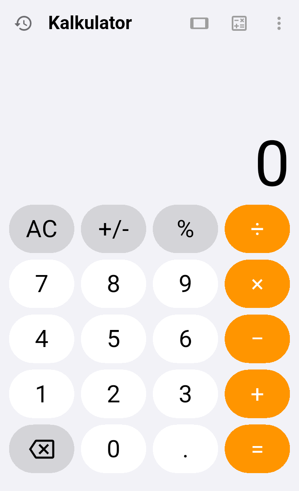
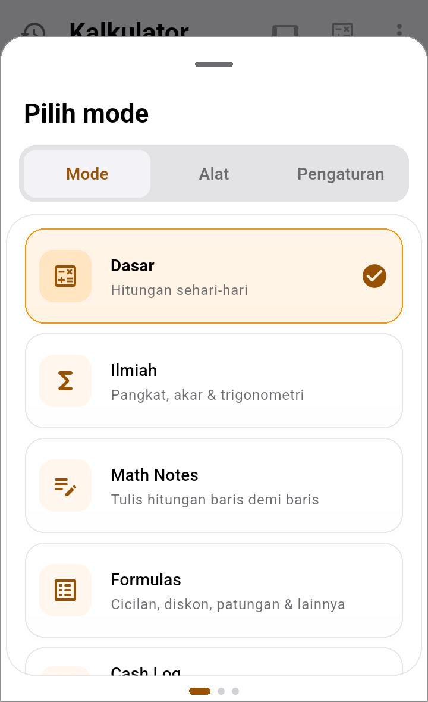
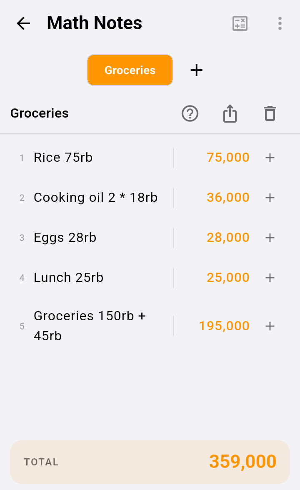
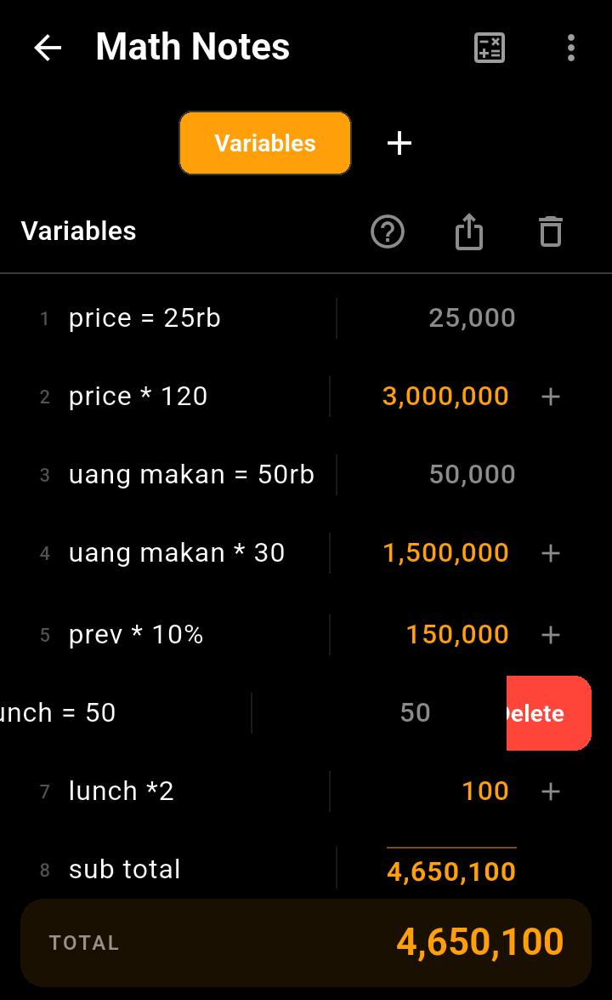
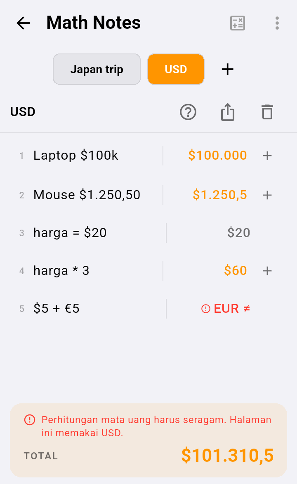
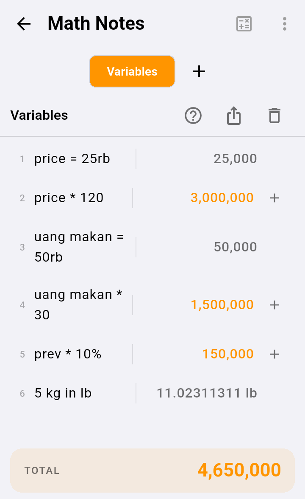
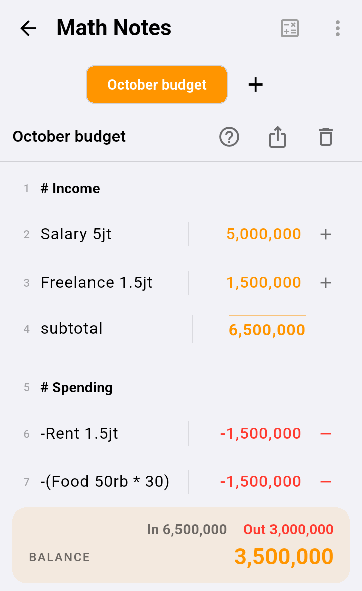
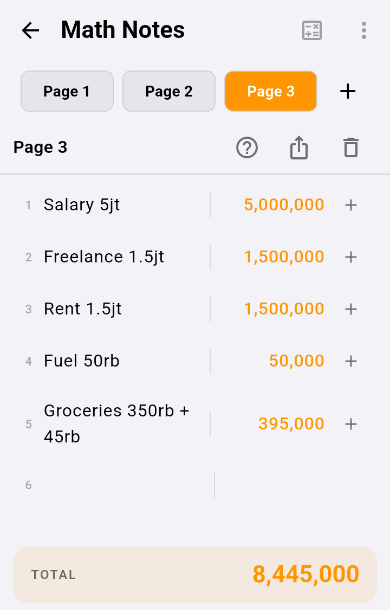
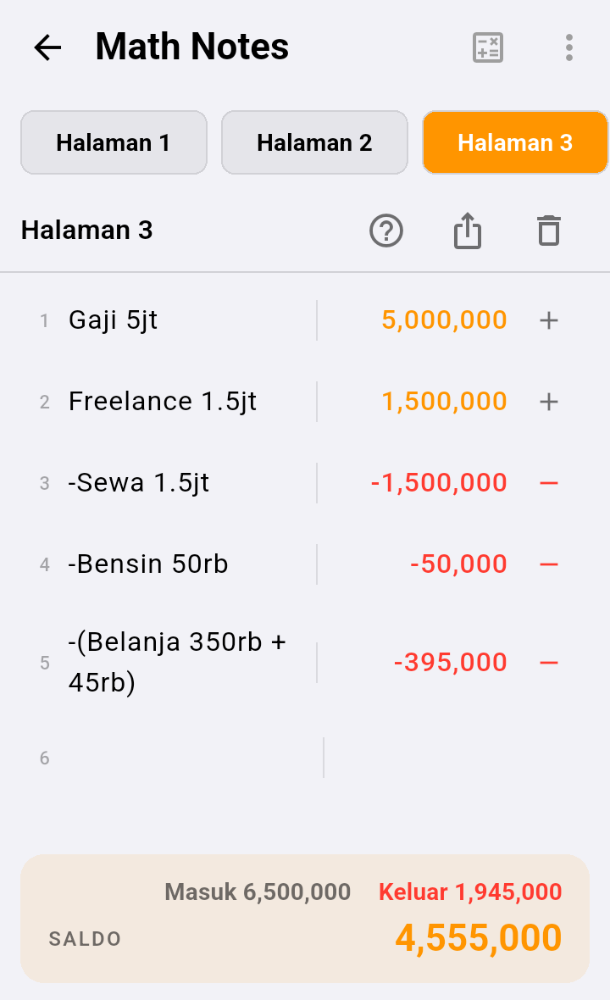

Tulis hitungan seperti di buku catatan, satu baris satu hitungan. Hasilnya langsung muncul di kanan, dan totalnya di bawah. Cocok untuk belanja, anggaran bulanan, harga jual, bagi-bagi uang, dan sebagainya.


Ketuk baris kosong, lalu ketik hitungan. Kamu tidak perlu menekan sama dengan: hasilnya langsung muncul di kolom kanan.
Lunch 25rb dan Groceries 150rb + 45rb tetap terhitung, karena kata-kata dianggap keterangan dan diabaikan.

Tulis uang seperti biasa kamu menulisnya. Math Notes mengerti singkatan Indonesia, dan menghitung uang dengan pas sampai sen.
| Kamu tulis | Dibaca sebagai |
|---|---|
50rb, 50 ribu, 50k | 50.000 |
5jt, 1.5jt, 2 juta | 5.000.000 · 1.500.000 · 2.000.000 |
2M, 1.2 miliar | 2.000.000.000 · 1.200.000.000 |
Rp500.000, Rp 1.250.000,50 | 500.000 · 1.250.000,50 |
5.000.000 (titik lebih dari satu) | 5.000.000 |
5.000 tanpa "Rp" dibaca 5 (lima koma nol), bukan lima ribu. Tulis 5rb atau Rp5.000 supaya jelas.M (besar) artinya miliar, atau juta jika setelah mata uang selain rupiah, sedangkan m (kecil) artinya meter. k (kecil) artinya ribu, sedangkan K (besar) artinya Kelvin, kecuali tepat setelah mata uang: $100K = 100.000.Tulis simbol atau kode mata uang di samping angkanya. Hasilnya ikut menampilkan simbol itu.
| Kamu tulis | Dibaca sebagai |
|---|---|
$100k, $1.250,50, 100 USD | $100.000 · $1.250,5 · $100 |
¥1.200, $1,250.50 (gaya Inggris juga bisa) | ¥1.200 · $1.250,5 |
€20, £20, ¥1.200, ₩5000, ₹500 | euro, pound, yen, won, rupee |
S$20, A$20, RM20, SR20, CN¥20 atau RMB 20 | dolar Singapura dan Australia, ringgit, riyal, yuan |
Rp50.000 | Rp50.000 |
$100 in IDR atau 100 USD ke IDR dihitung dengan kurs terbaru. Hasil konversi berwarna abu-abu dan tidak ikut TOTAL.harga = $20, baris harga * 3 hasilnya $60.¥ adalah yen Jepang. Untuk yuan Tiongkok tulis CN¥, RMB, atau CNY.M mengikuti mata uangnya: $3M = 3.000.000 (juta), Rp3M = 3.000.000.000 (miliar). Tanpa mata uang, M berarti miliar.
$5 + €5 mencampur dua mata uang, jadi ditandai merah dan tidak ikut TOTAL.100.000,5; dalam bahasa Inggris 100,000.5. Yang berubah hanya tampilannya.Tulis nama = angka untuk menyimpan angka, lalu pakai namanya di baris lain. Kalau angkanya berubah, semua baris yang memakainya ikut berubah.
price = 25rb, lalu price * 120 menghasilkan 3.000.000.uang makan = 50rb, lalu uang makan * 30.
| Tulis | Artinya |
|---|---|
line3 | hasil baris nomor 3 (lihat nomor kecil di kiri) |
prev | hasil baris sebelumnya |
total | jumlah semua baris di atasnya |
Contoh: prev * 10% menghitung 10% dari baris sebelumnya, dan line3 - line4 mengurangkan dua baris.
Untuk anggaran bulanan, bagi catatan menjadi beberapa bagian.
# untuk membuat judul bagian, misalnya # Income atau # Pengeluaran. Judul tampil tebal dan tidak dihitung.subtotal atau sum untuk menjumlahkan bagian itu saja (dari judul terakhir sampai baris ini). Tulis average untuk rata-ratanya.
Total belanja 50rb dibaca 50.000. Kata "Total" di situ hanya keterangan. Baru dianggap perintah kalau berdiri sendiri, misalnya total atau total * 2.gaji * 10% menghitung 10% dari gaji.50rb + 10% menghasilkan 55.000 (ditambah 10% dari dirinya sendiri).5 kg in lb, 10 km to mi, atau 2 h ke min mengonversi satuan. Hasil konversi tampil abu-abu dan tidak ikut TOTAL.Setiap baris angka punya tombol kecil di ujung kanan. Tombol itu menunjukkan apakah baris itu uang masuk atau uang keluar.
Bensin 50rb. Tombolnya bertanda +, artinya uang masuk.-Bensin 50rb, angkanya merah, dan tombolnya menjadi −.-Makan 30rb sama saja.Bensin 50rb + 20rb menjadi -(Bensin 50rb + 20rb), yaitu −70.000.subtotal tidak punya tombol ini.Begitu ada satu pengeluaran, bagian bawah menampilkan rinciannya:
| Di layar | Artinya |
|---|---|
| Masuk | jumlah semua pemasukan |
| Keluar | jumlah semua pengeluaran |
| SALDO | sisa uang: In dikurangi Out |
Contoh: Gaji 5jt, lalu Bensin 50rb dan Makan 30rb yang ditandai pengeluaran, menghasilkan In 5.000.000, Out 80.000, dan BALANCE 4.920.000.


Kalau semua baris adalah pemasukan (tidak ada yang minus), bagian bawah hanya menampilkan TOTAL. Begitu ada pengeluaran, judulnya berubah menjadi BALANCE dan In / Out muncul di atasnya.
TOTAL dan BALANCE menjumlahkan semua baris hitungan biasa. Yang tidak ikut dijumlahkan:
#,nama = …),subtotal, sum, average, dan total, supaya angkanya tidak terhitung dua kali.Bensin 50rb lupa ditandai, angka itu menambah BALANCE. Periksa: pengeluaran selalu merah.| Ingin… | Tulis |
|---|---|
| Menjumlah belanja | Beras 75rb · Minyak 2 * 18rb |
| Mencatat pengeluaran | ketuk + di kanan baris, atau tulis -Bensin 50rb |
| Menghapus baris | geser baris ke kiri (bisa Urungkan) |
| Menyimpan angka | harga = 25rb |
| Memakai angka itu | harga * 12 |
| Membuat judul bagian | # Pengeluaran |
| Menjumlah satu bagian | subtotal atau sum |
| Rata-rata satu bagian | average |
| Hasil baris 4 dikurangi baris 8 | line4 - line8 |
| 10% dari baris sebelumnya | prev * 10% |
| Konversi satuan | 5 kg in lb |